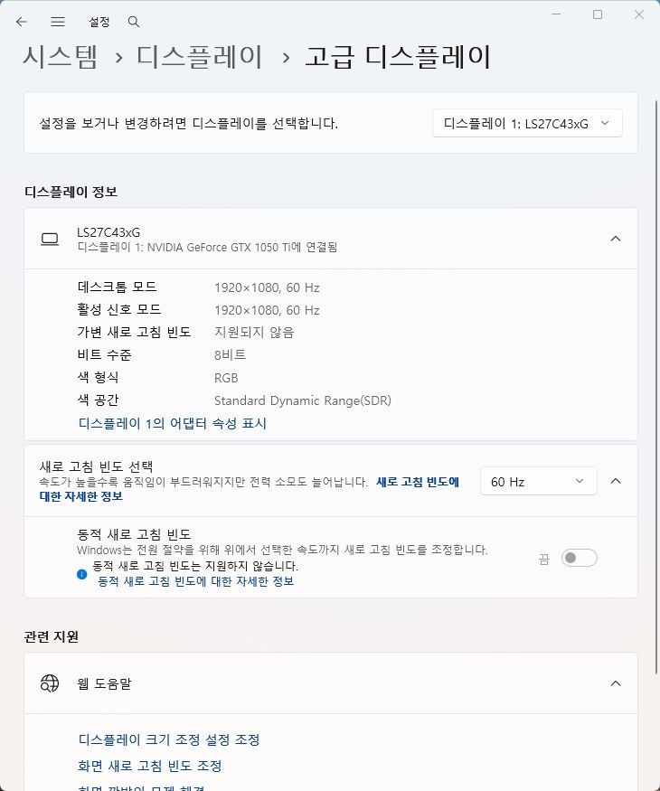

디스플레이
모니터 주사율 안 바뀜 원인과 점검 순서
고주사율 모니터인데 설정이 60Hz에 고정되어 있거나 주사율 옵션이 비활성화된 경우
모니터가 144Hz 등 고주사율을 지원한다고 표기되어 있어도, Windows나 그래픽 제어판에서는 케이블·드라이버·모니터 OSD 설정 중 하나라도 맞지 않으면 60Hz로만 표시되거나 옵션 자체가 비활성화될 수 있습니다.
가장 흔한 원인은 케이블입니다. HDMI 1.4처럼 오래된 규격은 고해상도에서 고주사율을 지원하지 못해 자동으로 60Hz로 제한됩니다. DP 케이블이나 HDMI 2.0 이상 케이블로 바꾸는 것만으로 해결되는 경우가 많습니다.
케이블이 맞는데도 안 된다면 그래픽 드라이버가 오래되었거나, 모니터 자체 OSD 메뉴에서 고주사율 모드가 꺼져 있을 수 있습니다.
이 가이드가 필요한 상황
- 설정에서 주사율 옵션에 60Hz만 표시되거나 다른 값이 회색으로 비활성화되어 있다.
- 케이블을 바꾸지 않았는데 이사·자리 이동 후 갑자기 60Hz로 고정됐다.
- 다른 모니터나 다른 PC에 연결하면 고주사율이 정상적으로 표시된다.
먼저 확인할 항목
- 케이블 규격 확인 — 모니터 사양표에서 요구 케이블 규격을 확인하고, DP 케이블이나 HDMI 2.0 이상 케이블로 교체해 비교하세요.
- 그래픽 드라이버 업데이트 — 그래픽카드 제조사 홈페이지나 GeForce Experience·AMD Software에서 최신 드라이버로 업데이트하세요.
- 모니터 OSD 설정 확인 — 모니터 버튼으로 OSD 메뉴를 열어 오버클럭·고주사율 관련 항목을 찾아 켜보세요.
- 듀얼 모니터 구성 확인 — 문제되는 모니터 하나만 연결한 상태로 고주사율이 정상 표시되는지 확인하세요.
원인을 더 정확히 나누는 방법
옵션 자체가 회색으로 막혀 있는 경우
설정 화면에서 원하는 주사율이 아예 목록에 없거나 선택할 수 없게 되어 있다면, Windows가 해당 주사율을 지원 가능한 조합으로 인식하지 못하고 있다는 뜻입니다. 설정 > 시스템 > 디스플레이 > 고급 디스플레이에서 실제 적용된 새로 고침 빈도와 선택 가능한 값을 확인하세요.

케이블을 바꾸지 않았는데 갑자기 안 될 때
이사나 자리 이동 후 케이블 연결 순서가 바뀌었거나(그래픽카드 포트가 아닌 메인보드 포트에 연결), 케이블이 미세하게 손상된 경우가 흔합니다.
확인 결과에 따른 다음 단계
- 케이블 교체로 해결될 때 — 고주사율을 지원하는 케이블을 계속 사용하세요.
- 드라이버 업데이트로 해결될 때 — 이후에도 드라이버를 최신 상태로 유지하세요.
- OSD 설정으로 해결될 때 — 모니터 자체의 오버클럭 모드를 켜둔 상태로 유지하면 됩니다.
- 위 방법으로도 해결되지 않을 때 — 다른 PC에 연결해 모니터 자체의 문제인지 교차 테스트하세요.
피해야 할 실수
- 케이블 규격 확인 없이 바로 그래픽카드를 의심하는 것
- 모니터 OSD의 오버클럭 메뉴를 확인하지 않고 드라이버만 계속 재설치하는 것
자주 묻는 질문
- HDMI로도 144Hz가 되나요? HDMI 2.0 이상이라면 해상도에 따라 가능합니다.
- 그래픽카드 제어판과 Windows 설정 중 어디서 바꿔야 하나요? 두 곳 모두 확인해야 합니다.
- 케이블도 바꾸고 드라이버도 최신인데 안 되면요? 모니터 OSD의 오버클럭 관련 메뉴를 확인하세요.
최종 검토일: 2026-08-07